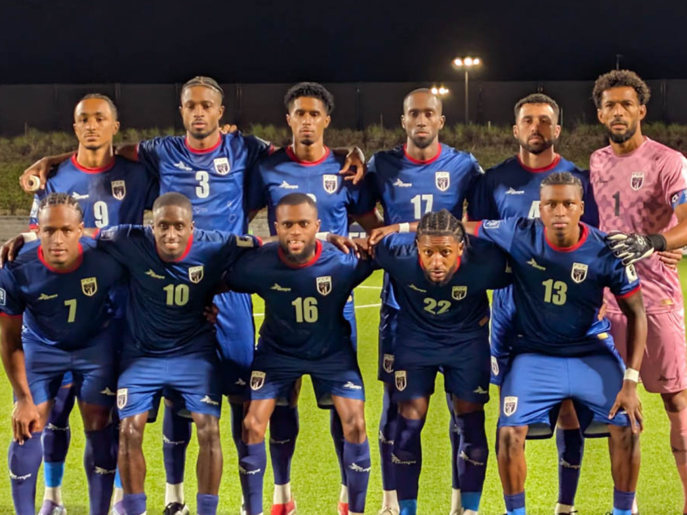

Cabo Verde
Cabo Verde
0
Participações
em Copas do Mundo
África
A seleção cabo-verdiana de futebol, conhecida como os "Tubarões Azuis", representa o arquipélago de Cabo Verde nas competições internacionais. Apesar de ser um país pequeno com menos de 600 mil habitantes, Cabo Verde surpreendeu o mundo do futebol ao alcançar as quartas de final da Copa Africana de Nações em 2013 e 2021. A seleção nunca se classificou para uma Copa do Mundo, mas é considerada uma das maiores revelações do futebol africano.

Goleiros:
Defensores:
Meio-campistas:
Atacantes:
Participações
em Copas do Mundo
Títulos
Melhor campanha
Primeira
participação
| Ano | Sede | Resultado |
|---|---|---|
| Cabo Verde ainda não se classificou para uma Copa do Mundo da FIFA. | ||
| Participações | 0 |
| Títulos | 0 |
| Vice-campeonatos | 0 |
| 3º Lugar | 0 |
| 4º Lugar | 0 |
| Melhor campanha | Não classificado |
| Jogos disputados | 0 |
| Vitórias | 0 |
| empates | 0 |
| Derrotas | 0 |
calendar_monthJunho - Julho de 2026
location_onMéxico, Estados Unidos e Canadá